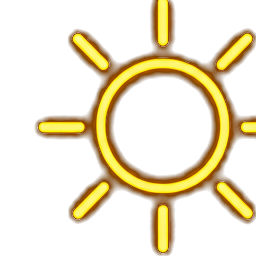
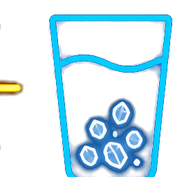
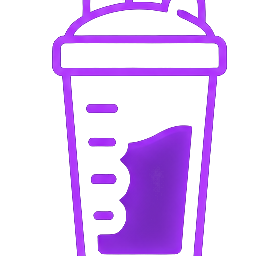
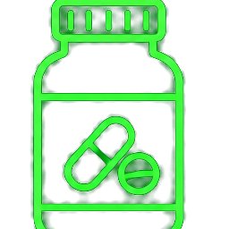

微小的日常選擇可能大幅影響你未來數十年的健康與精力
來源：艾柳波羅斯（Vassily Eliopoulos）醫學博士 / 天下雜誌
長壽醫學強調，起床後的習慣並非小事。你醒來後的 90 分鐘會決定接下來約 16 小時的生理時鐘、荷爾蒙分泌以及整體代謝狀態。


起床後體內的皮質醇 (壓力荷爾蒙) 自然會處於高水平。若立刻喝下咖啡因，會與皮質醇疊加導致過度焦慮與心悸。長壽醫師建議先活動 20-30 分鐘，等皮質醇下降後再享受咖啡。


艾柳波羅斯醫師建議起床後一小時內喝哪種水？
「起床後少去散步一次、立刻滑手機、忽略高蛋白早餐，短期內可能看不出差異。但這微小日常選擇的經年累月，大幅影響你長期的代謝和精力表現。」
持續性比劑量更重要，讓我們從明天的第一個 90 分鐘開始！